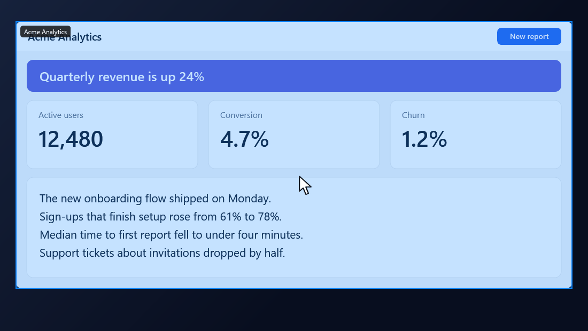
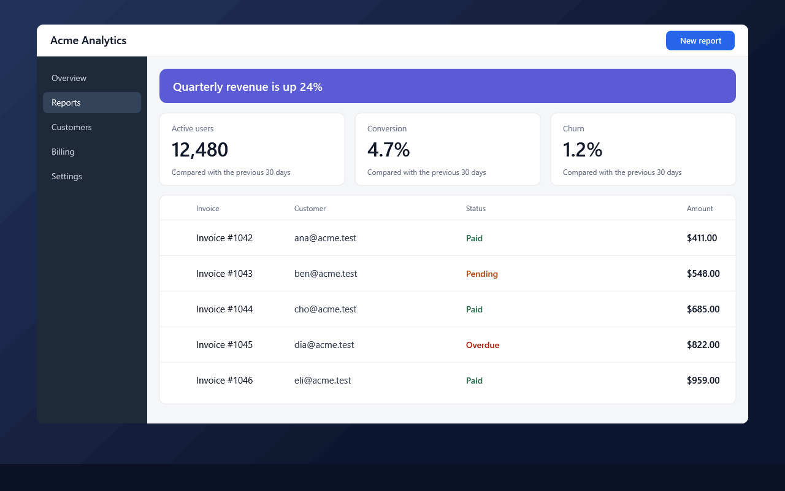
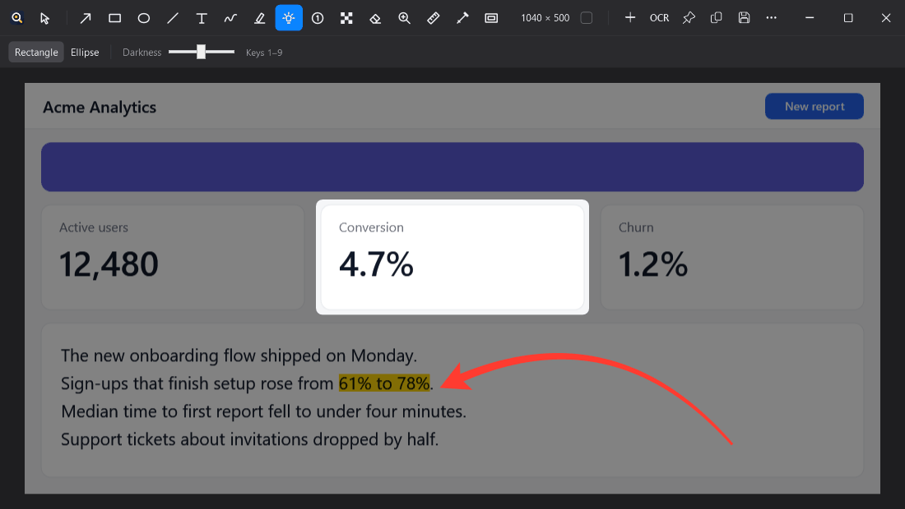
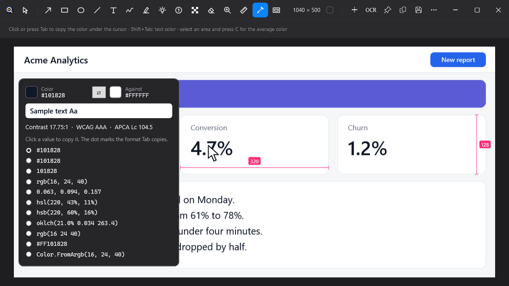
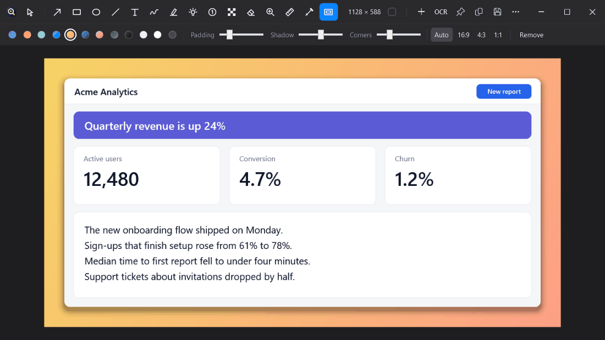

Capture
Full screen, any area, a single window or on a timer. Scrolling capture handles pages longer than your screen, sticky headers included.
Capture, mark up, measure and share a screenshot in a couple of keystrokes.
Download for Windows v1.1.1 See the latest releaseWindows 10 and 11 · Free installer · other versions
Loupix runs on Windows 10 and 11. Open this page on your PC to download it.

No account, no ads, no trial, no paid tier.
Your screenshots stay on your PC. Loupix only goes online if you set up your own S3 upload.
It sits in the notification area until you press a hotkey.

Full screen, any area, a single window or on a timer. Scrolling capture handles pages longer than your screen, sticky headers included.

Bendable arrows, boxes, labels, numbered steps and a spotlight. Pixelate, blur or erase, including a mode that hides only the text.

A pixel ruler that finds the edges under your cursor. A colour picker with HEX, RGB, HSL, OKLCH and more, plus WCAG and APCA contrast checks.

Copy text with OCR and read QR codes. Pin a screenshot on top, drag it into another app, or add a clean background before you send it.
The editor stays out of your way. Keep your hand on the keyboard.
Get the installer for your PC. Need a different one? Most Windows PCs · Windows on Arm
Get the installer for your PC from the latest release.
Loupix isn't code-signed yet, so Windows may warn you the first time. Choose More info, then Run anyway.
Press Alt+Shift+2 and drag over any area. Needs Windows 10 version 1809 or later, or Windows 11.